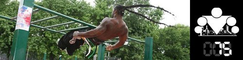

100 Дневный воркаут
<==== Вернуться к оглавлению
День 75. Классификация упражнений по сложности

Поскольку мы начали эту неделю с разговора о новых упражнениях, я думаю, что вполне логичным будет смотреться инфо-пост в котором мы систематизируем различные популярные упражнения по группам мышц и уровню сложности.
(Мы пока не уделяли вообще никакого времени графическому представлению этой информации, хотя можно всё очень красиво отрисовать в виде иконок и будет просто зашибись, но пока так.)
Как я уже написал выше, для удобства мы решили разделить все упражнения по 2-м направлениям, во-первых по сложности, а во-вторых по основной группе мышц, которая в них задействуется. В итоге мы выделили 5 мышечных групп: грудь, спина, пресс, ноги и руки. И вот что у нас получилось (классификация примерна, будет круто получить ваши отзывы на неё!):
Грудь
Уровень I:
-
Отжимания с коленей
- Отжимания с коленей с широкой постановкой рук
- Отжимания с коленей с узкой постановкой рук
Уровень II:
-
Отжимания от пола
-
Отжимания с опорой на одну ногу
Уровень III:
-
Отжимания с хлопком
-
Отжимания Bar-tendaz
Уровень IV:
-
Отжимания на брусьях
-
Отжимания от турника
Уровень V:
-
Отжимания на брусьях с хлопком
-
Русские отжимания на брусьях
Спина
Уровень I:
-
Австралийские подтягивания
-
Подтягивания на брусьях
Уровень II:
-
Подтягивания на турнике
-
Подтягивания хватом снизу
-
Подтягивания разнохватом
-
Подтягивания узким хватом
-
Подтягивания широким хватом
Уровень III:
-
Высокие подтягивания
-
Подтягивания к коленям
Уровень IV:
-
Плиометрические подтягивания
-
Подтягивания с хлопком перед собой
Уровень V:
-
Подтягивания с хлопком за спиной
- Подтягивания с касанием носков
Уровень VI:
- Передний вис
-
Задний вис
- Подтягивания в переднем висе
- Подтягивания в заднем висе
Ноги
Уровень I:
- Подъёмы на носки
- Подъёмы на носки на одной ноге
Уровень II:
- Стульчик у стены
Уровень III:
-
Приседания
Уровень IV:
-
Приседания с выпрыгиваниями
- Выпады
- Выпады в стороны
Уровень V:
- Приседания на одной ноге
- Пистолетики
Руки
Уровень I:
-
Трицепсовые разгибания
- Трицепсовые отжимания от пола
-
Плиометрические отжимания
Уровень II:
-
Алмазные отжимания
-
Отжимания с хлопком за ногой
-
Ацтекские отжимания
-
Выход силой
Уровень III:
-
Выход силой узким хватом
-
Выход силой широким хватом
Уровень IV:
- Трицепсовые разгибания одной рукой
-
Медленный выход силой
Уровень V:
- Отжимания в стойке на руках
- Impossible на брусьях
Уровень VI:
- Выход силой нижним узким хватом
Уровень VII:
- Выход силой нижним скрестным хватом
Пресс
Уровень I:
-
Планка
- Боковая планка
Уровень II:
- Подъёмы корпуса
- Ножницы
Уровень III:
-
Уголок на турнике
-
Уголок на брусьях
Уровень IV:
- Подъёмы ног к турнику
- Книжечка
Уровень V:
- Дворники
P.S.
Приведенные выше упражнения являются базовыми и не предназначены для того, чтобы подготовить вас к выполнению сложных элементов продвинутого уровня (передний/задний висы и т.д.). Для этого лучше воспользоваться
соответствующими обучающими видео
======> День 76. Техника спринтерского бега (основы)